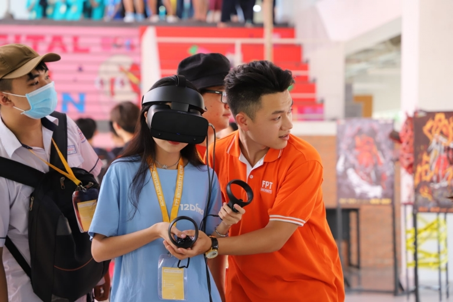

Chuyên ngành Trí tuệ Nhân tạo (AI) là một trong những hướng phát triển vượt bậc của ngành CNTT. Chuyên ngành này sẽ thông qua việc sử dụng các mô hình máy tính, kỹ thuật cao và công nghệ hiện đại để tạo ra máy móc cũng như các hệ thống thông minh với khả năng xử lý thông tin khổng lồ.
Chuyên ngành AI – một ngành hiện đang rất hot tại các trường đại học tại Việt Nam và trên thế giới
Theo dòng chảy của cuộc cách mạng công nghệ 4.0, trí tuệ nhân tạo ngày càng phổ biến và được ứng dụng rộng khắp trong cuộc sống. Với tốc độ phát triển và bùng nổ một cách “thần tốc” của công nghệ số, chuyên ngành AI chắc chắn sẽ mang đến cho người học một tương lai rộng mở kèm theo đó là vô số cơ hội phát triển.
Hiện nay tại Việt Nam, lực lượng nhân sự chuyên ngành AI vẫn đang bị thiếu hụt và không đủ số lượng để đáp ứng tốc độ phát triển nói chung.
Cũng theo đó, Bà Nguyễn Thị Lan Phương – Trưởng phòng Nhân sự Trung tâm Không gian mạng Viettel cho biết: Hiện nay, nhu cầu về nguồn nhân lực ngành Trí tuệ nhân tạo đang là thách thức lớn của tất cả các doanh nghiệp trên thị trường.
Sau hai năm học tập tại trường FPT, Thành Luân cho rằng đây là môi trường nơi có những sinh viên thân thiện, năng động, hòa đồng, đội ngũ giảng viên thì lại cực kỳ tận tâm, nhiệt huyết với công tác giảng dạy.
Hiện nay tại Việt Nam, lực lượng nhân sự chuyên ngành AI vẫn đang bị thiếu hụt và không đủ số lượng để đáp ứng tốc độ phát triển nói chung
Sinh viên tốt nghiệp chuyên ngành AI sẽ có cơ hội việc làm đa dạng với rất nhiều vị trí tùy theo định hướng của mình như: Kỹ sư phát triển hệ thống tự động hóa, Kỹ sư dữ liệu, Kỹ sư phát triển ứng dụng AI, robot, Chuyên gia nghiên cứu chuyên sâu về trí tuệ nhân tạo, Phân tích kinh doanh…
Bên cạnh đó, môi trường làm việc cũng rất đa dạng như: các Công ty công nghệ, viện nghiên cứu, các công ty viễn thông, nhà xưởng, doanh nghiệp,…
ĐH Bách Khoa Hà Nội
Khi theo học chuyên ngành AI tại ĐH Bách Khoa Hà Nội, Sinh viên sẽ có được kiến thức tổng quát cũng như các kỹ năng đổi mới sáng tạo và nền tảng chuyên môn vững vàng.
ĐH Sư phạm Kỹ thuật
Ngành AI tại ĐH Sư phạm Kỹ thuật có tên là Ngành Robot và Trí Tuệ Nhân Tạo. Đây là sự kết hợp liên ngành và có sự hỗ trợ của các ngành học liên quan. Ngành này sẽ trang bị cho sinh viên có năng lực làm việc nghiên cứu và phát triển trong lĩnh vực robot và trí tuệ nhân tạo.
Đồ án nhận diện khuôn mặt của sinh viên AI trường ĐH FPT
Chuyên ngành Trí tuệ nhân tạo tại Đại học FPT thuộc chuyên ngành CNTT. Tại Đại học FPT, AI đang là một trong những chuyên ngành “hot” nhất hiện nay với cơ hội việc làm và thu nhập cao ngất ngưởng.

Lê Xuân Khanh – sinh viên K15, chuyên ngành Trí tuệ nhân tạo chia sẻ: “Nhà trường luôn tạo mọi điều kiện tốt nhất để sinh viên chúng mình được tạo điều kiện thực hành, thực tập thực tế với dự án thực.
Với lộ trình đào tạo rõ ràng, kết hợp thực hành và làm việc thực tế, sinh viên chuyên ngành Trí tuệ nhân tạo của Đại học FPT không chỉ phát triển nâng cao kiến thức, kỹ năng nghề nghiệp mà còn tạo được mối liên lạc, mạng lưới với doanh nghiệp. Từ đó mở rộng cơ hội tìm kiếm việc làm chất lượng sau khi tốt nghiệp.
Bên cạnh đó, sinh viên khối ngành CNTT nói chung và chuyên ngành AI nói riêng sẽ được rèn luyện kỹ năng mềm và trình độ ngoại ngữ đạt chuẩn với 2 ngôn ngữ (Tiếng Anh và Tiếng Nhật). Ngoài giờ học, có đến hơn 40 Câu lạc bộ Đội – Nhóm với đa dạng lĩnh vực nhằm tạo môi trường thuận lợi nhất để sinh viên sinh hoạt, kết nối, rèn luyện,…
Lê Xuân Khanh – sinh viên K15, chuyên ngành Trí tuệ nhân tạo chia sẻ thêm: “Trong quá trình theo học, mình luôn cảm thấy thoải mái nhờ vào các hoạt động ngoại khóa, sinh hoạt CLB Đội – Nhóm, nhờ vậy mình có thêm nhiều cơ hội kết nối, học tập và nâng cao kỹ năng giao tiếp”.
Trường Đại học FPT các cơ sở đều được đầu tư xây dựng hiện đại, kiến trúc xanh
Cơ sở vật chất tiện nghi cùng trang thiết bị, máy móc hiện đại tạo điều kiện thuận lợi cho phép sinh viên thực hành trực tiếp ngay mỗi giờ học. Ngoài ra, sinh viên sẽ có tối thiểu 1 học kỳ tham gia học tập và đào tạo thực tế tại các công ty phần mềm nổi tiếng. Hơn thế nữa, sinh viên Đại học FPT còn có cơ hội giao lưu, học tập ngắn hạn tại các trường công nghệ hàng đầu.
Phạm Thành Trung – sinh viên K16 hào hứng chia sẻ: “trường Đại học FPT là môi trường mà mình vừa được học tập theo hướng “Liberal Art”, vừa được tiếp cận các kiến thức và kĩ năng thực tế khi đi làm ở doanh nghiệp, đây là một hướng đi rất phù hợp với bản thân.
Ngoài việc đào tạo chuyên môn vững vàng, hỗ trợ thực tập tại các doanh nghiệp hàng đầu, hàng năm Đại học FPT còn tổ chức rất nhiều sân chơi công nghệ, vừa giúp sinh viên ứng dụng kiến thức và sáng tạo nên những sản phẩm thực tiễn mà còn mang về giải thưởng lớn, khuyến khích tinh thần sinh viên.
Đại học FPT với môi trường thực hành thực học, chú trọng đào tạo và phát triển toàn diện, sinh viên theo học chuyên ngành AI sẽ được trang bị đầy đủ kiến thức chuyên môn, kỹ năng mềm vững vàng để sẵn sàng làm việc tại các tập đoàn công nghệ hàng đầu trong và ngoài nước.